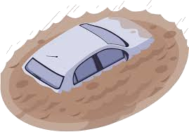

Clique sobre as areas destacadas em branco

Existem diversos bairros onde após uma forte tempestade apresentam em sua superfície, alguns pontos cobertos por uma lâmina de água, mas que neste caso não se caracteriza como inundações e sim como enchentes naturais. As enchentes tem papel importante na vida de um rio, mais em uma cidade cujos rios foram rodeados e ocupados por diversas casas e prédios, com uma imensa população, as consequências já não são as mesmas.
A drenagem urbanas também é importante para a distribuição da água. A forma dos vales, sua declividade e escala espacial e a escala espaço-temporal da chuva que impinge as encostas são fatores importantes para as condições de formação de enchentes repentinas ou prementes. Existem também enchentes regionais, por exemplo, nos meses de chuva (janeiro a março) nas áreas mais afastadas da capital, ou melhor, na grande São Paulo.
A necessidade de serem tomadas medidas urgentes por parte dos órgãos competentes, que visem adotar ações corretivas e preventivas que orientem a população já instalada e que controle a expansão urbana, podendo direcionar as novas ocupações, por meio de uma ampliação da oferta de moradias populares em locais adequados.
Estudiosos apontam a falta de infraestrutura da parte arquitetônica de décadas atrás, que poderiam divergir os causadores de alagamentos constantes, apontadas como principais causas: a falta de colaboração civil, a falta de limpeza e tratamento de esgoto e péssima administração governamental.